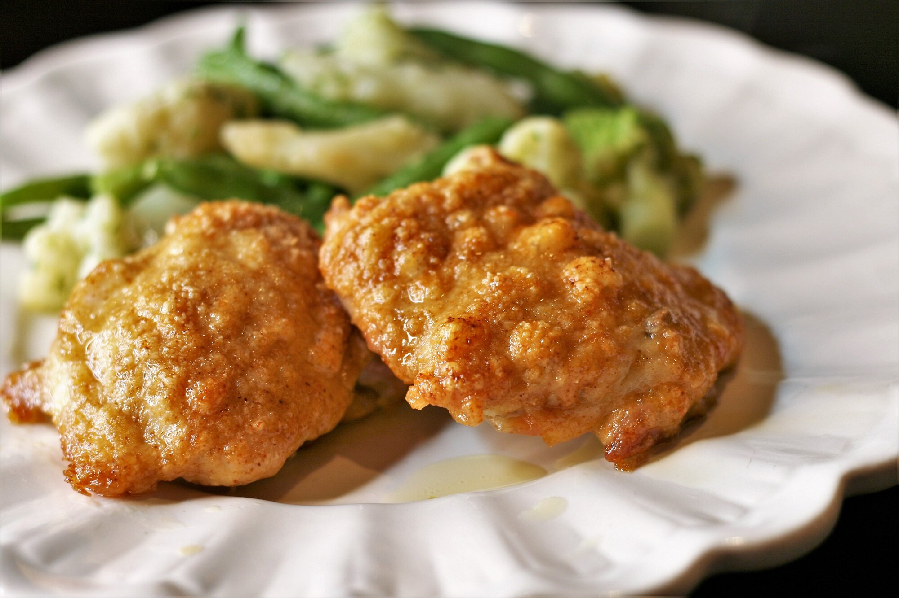

chicken

Description
An intricate and delicious food.
Ingredients
- ⅓ cup olive oil
- 1 cup grated Parmesan cheese
- 1 teaspoon celery salt
- 1 teaspoon cayenne pepper
- ½ teaspoon garlic powder
- 8 (5 ounce) boneless, skinless chicken thighs
Steps
- Preheat the oven to 375 degrees F (190 degrees C).
Line a jelly roll pan with foil..
- Put olive oil in a shallow bowl. Mix together Parmesan cheese,
celery salt, cayenne pepper, and garlic powder in another
shallow bowl...
- Cut chicken thighs in half. Dip chicken pieces in olive oil
so both sides are covered, then press one side in the Parmesan
mixture until coated. Place on the prepared pan with the coating facing up.
- Bake in the preheated oven until chicken is no longer pink in the center and
the juices run clear, about 25 minutes. An instant-read thermometer inserted
into the center should read at least 165 degrees F (74 degrees C).
Return to main page